How a flat, lifeless model becomes a believable surface — the single turning point where every piece of the rendering pipeline finally clicks together.
So far in the pipeline we have modelled geometry, projected it, rasterised it and even mapped textures onto it. We quietly assumed the renderer would "figure out" how light plays across a surface. It does not. With everything we have built so far, our shiny ceramic teapot renders as something disturbingly flat — all sense of depth, curvature and material simply gone.
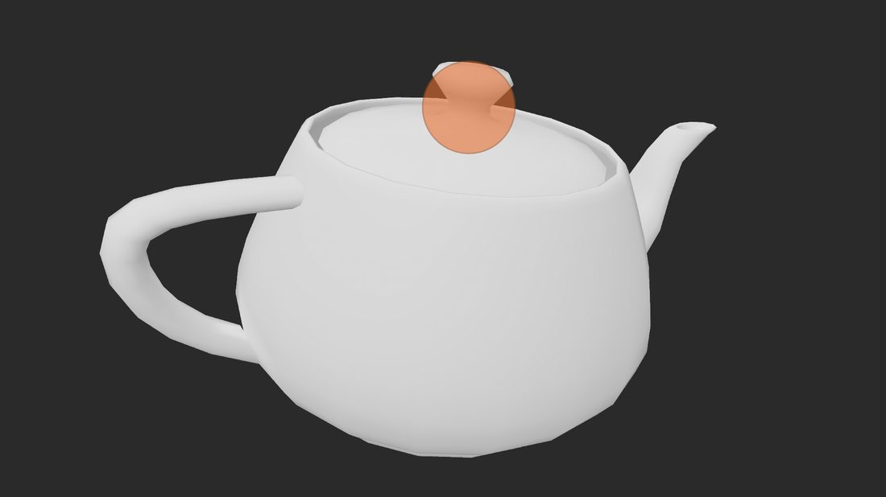
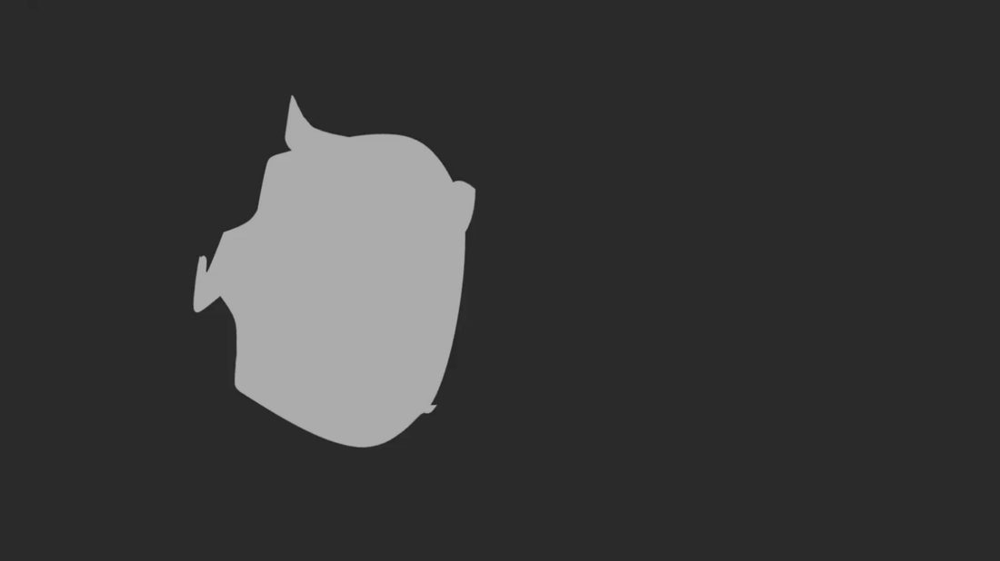
The missing ingredient is a model of light and how it interacts with materials. Without it, any scene — and arguably the real world — looks dull and flat, or is invisible entirely. This chapter builds that model from first principles, one term at a time, until we arrive at the equation that drives real-time graphics.
Return to the original idea: rays of light (let's keep it simple and say white) leave a source and strike objects in the scene. Rays that bounce away from the eye are never seen — our eyes cannot recover that energy. The interesting rays are the ones that do reach the eye. What happens to them is dictated entirely by the material the surface is made of.
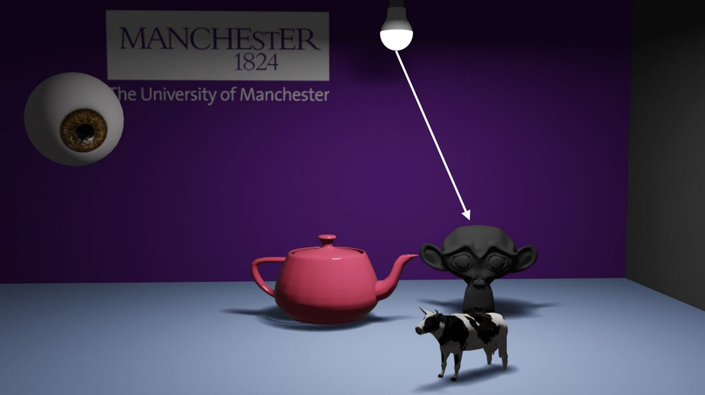
The most obvious material property is colour. If a surface is grey, every part of the white spectrum that isn't grey is absorbed, and the greyish component is reflected back. Crucially, on a matte surface this reflected light scatters uniformly in all directions. Trace the shape of that scattering and you get a near-perfect hemisphere (a semicircle in 2D). This is diffuse reflection: think felt, sponges, carpets, bricks — surfaces that look the same brightness no matter where you stand.
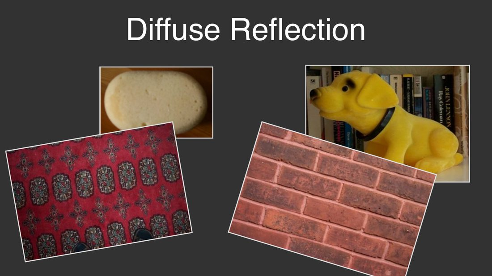
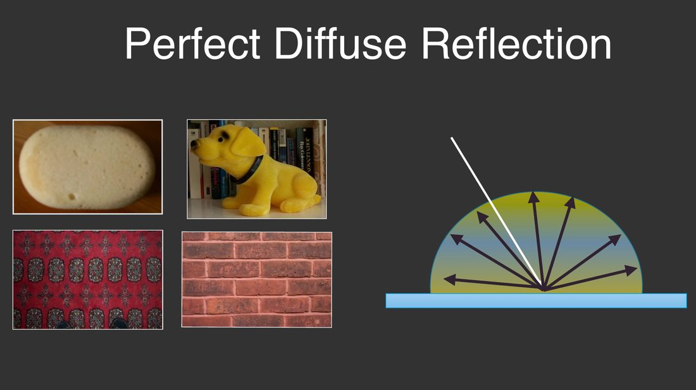
If we know the shape of the scattering, we can deduce the material. Real devices scan how light scatters off physical materials, and those profiles are used to build virtual materials — essential for simulation, architecture, and photorealistic games.
Do the same experiment with the shiny teapot and something changes: the light still scatters, but it is clearly stronger in one direction. You see bright whitish reflections from certain patches of the surface. These are specular reflections — points where light shoots out with more energy. The scattering profile shows a distinct bump toward the direction of maximum reflection.
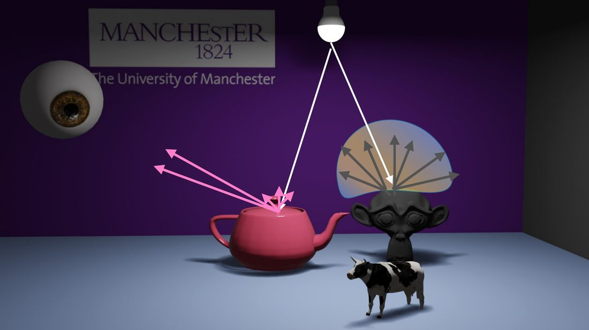
Push specularity to the extreme and you reach a perfect mirror: all incident light bounces off at the perfect reflection angle (mirrored about the surface normal), exactly as in a physics class. Every incoming ray reflects at one precise angle.
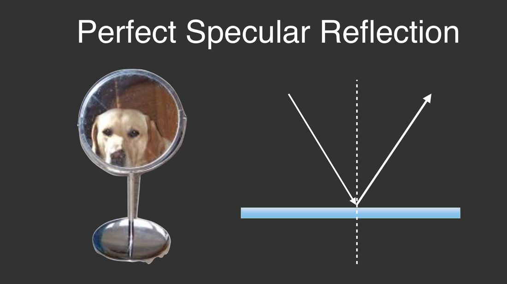
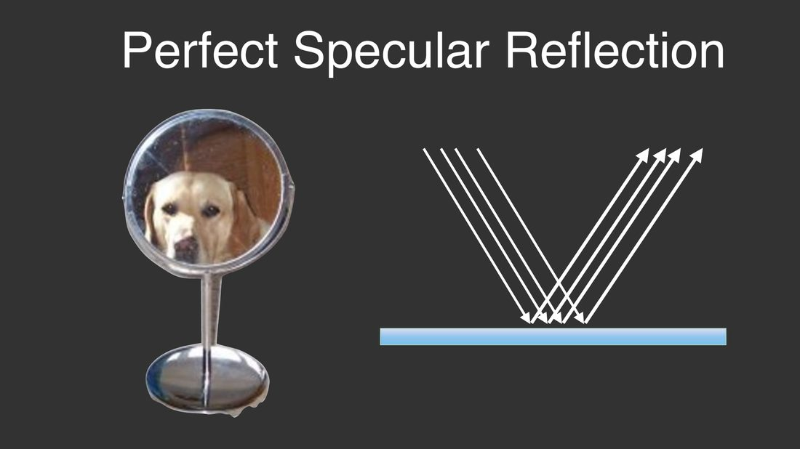
Most materials are not perfect mirrors (thankfully). They show imperfect specular reflection: some parts reflect strongly, but there is scattering in other directions too, creating that dome-shaped profile. The cause is microscopic roughness — zoom in and the surface is never perfectly smooth, which scatters the rays. Ceramics and metals behave this way.
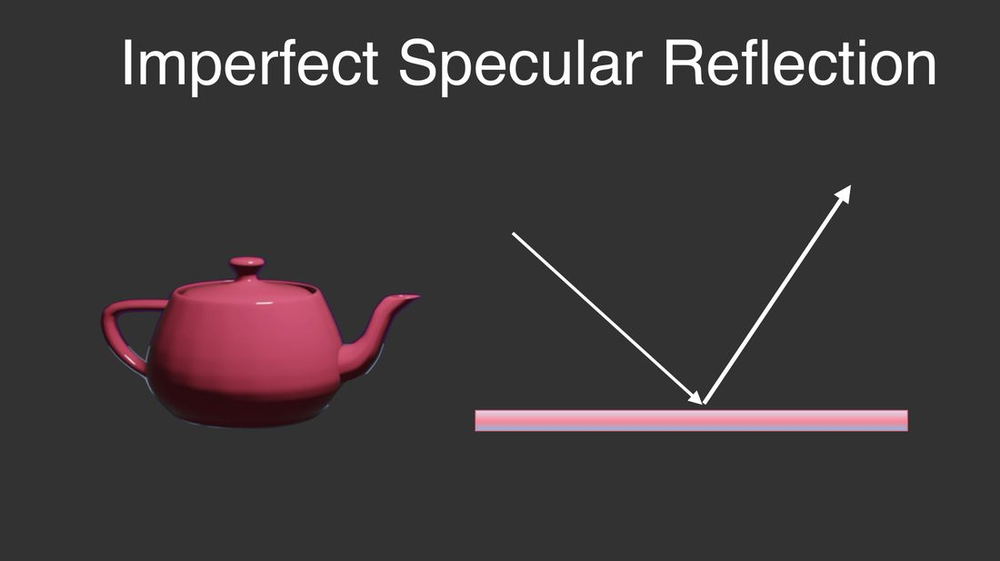
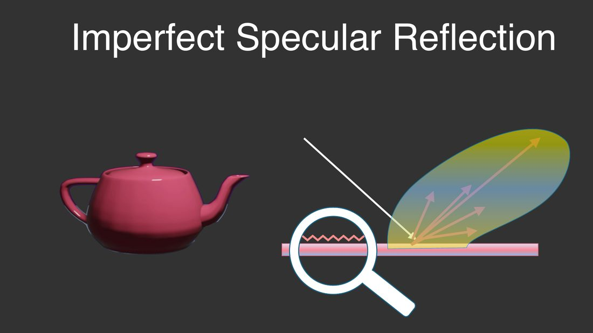
Materials aren't binary — they're rarely purely shiny or purely diffuse. Real surfaces combine both. So we combine the two scattering profiles, and that combination is the material. From here on we work with exactly two ingredients: a diffuse component and a specular component (if any).
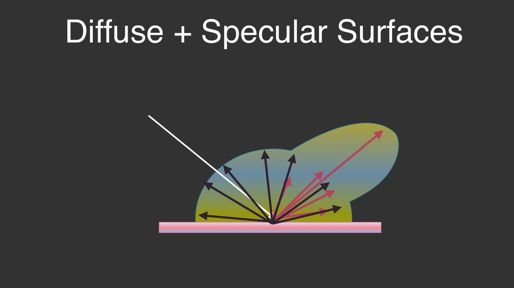
So why did our teapot render flat? In every material example above, we needed the direction the light comes from. But before this chapter we never had light directions — we assumed a single uniform light spread evenly across the whole scene. That uniform light is called ambient light.
The stronger the ambient light, the more of the teapot we see — but because it is identical everywhere, we have no information about how light would actually bounce. So the model's appearance depends only on how strong the ambient term is, normalised here between 0 and 1.
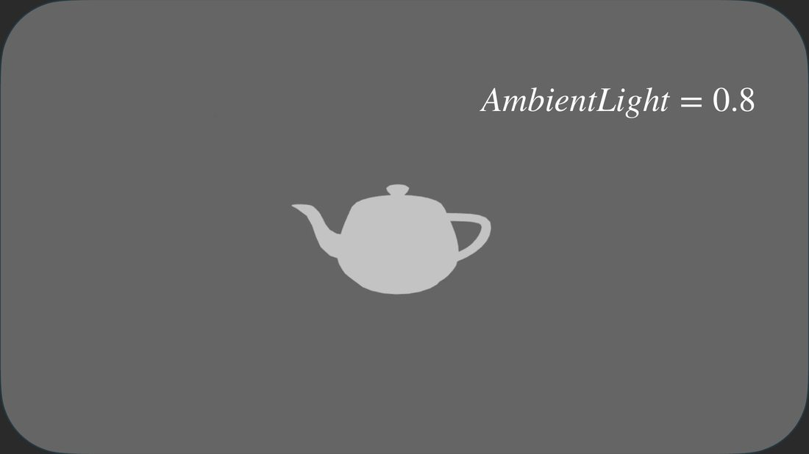
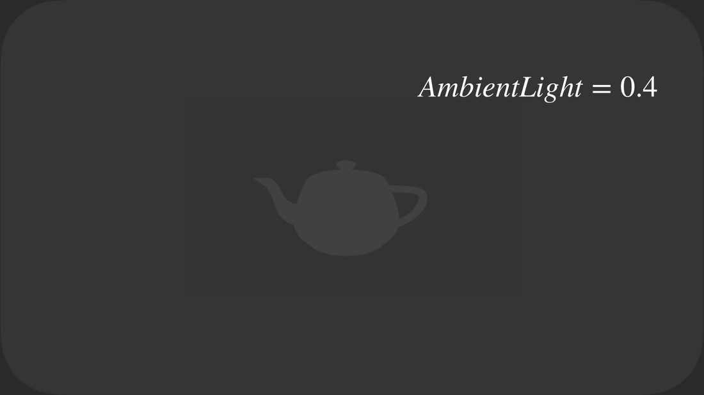
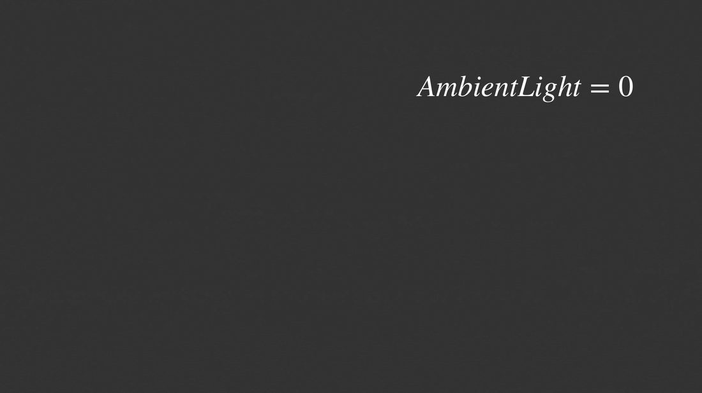
Ambient light has no direction. Slide it and watch the teapot get brighter — but never gain any shape. This is precisely the problem.
To recover shape we must model light sources and simulate material properties. That sounds heavy, but it breaks down into a few small, intuitive steps. Let's build it.
Picture a simple Blender scene: a flat plane and a light source. The plane has a surface normal \(\hat{\mathbf N}\). We placed the light, so we know where it is — meaning we can define a vector \(\hat{\mathbf L}\) pointing toward it. That gives us the light direction. The light also has an intensity \(I\) shining on the surface.
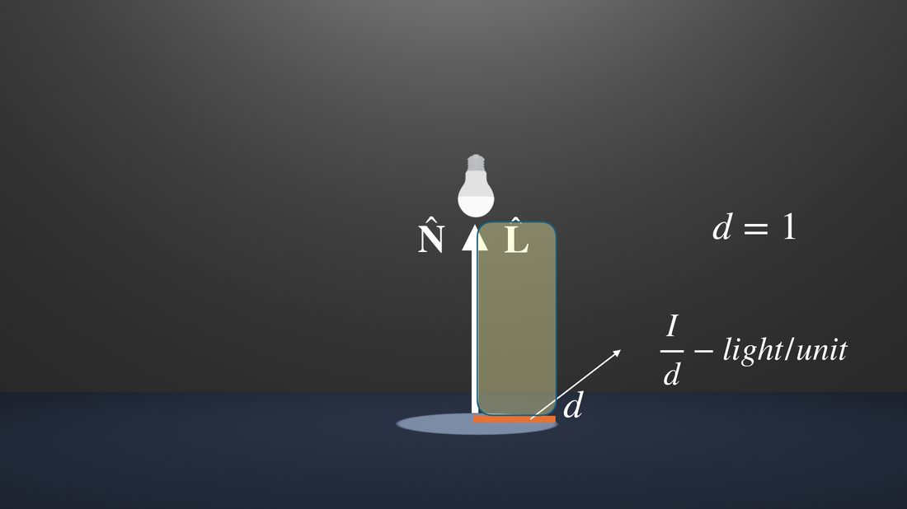
Keep it 2D. Take a patch of surface of width \(d = 1\) unit. With the light directly overhead, the light per unit equals \(I\) (since \(d=1\)). Now rotate the light around a point on the plane by angle \(\theta\). The incoming beam now strikes at a slant: the same beam must cover a larger width \(d'\!>d\), so each unit of surface receives less light. The surface gets darker.
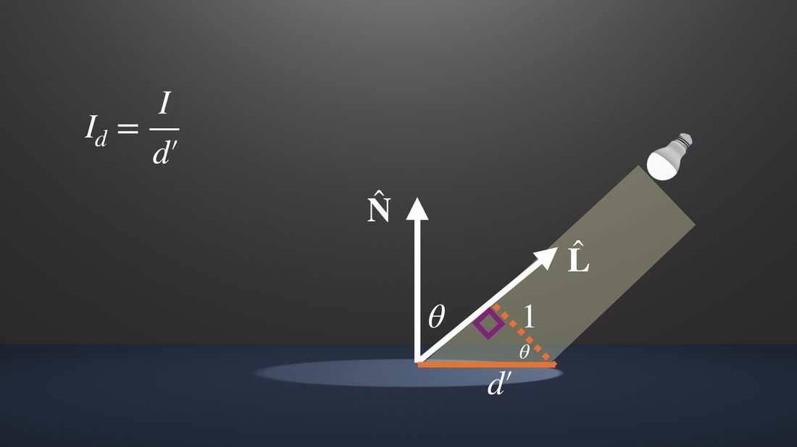
The original beam width \(d\) is still perpendicular to the light direction, so sliding it down to the surface creates a right triangle. The angle between \(d\) and \(d'\) is also \(\theta\). Since it's a right triangle and \(d=1\):
This is the key insight: the intensity landing on the surface scales with the cosine of the angle between the light direction and the surface normal. At \(\theta = 0\) the light is straight on, \(\cos 0 = 1\), and we get full intensity. As the angle grows, intensity falls.
And because \(\hat{\mathbf N}\) and \(\hat{\mathbf L}\) are unit vectors, \(\cos\theta\) is simply their dot product:
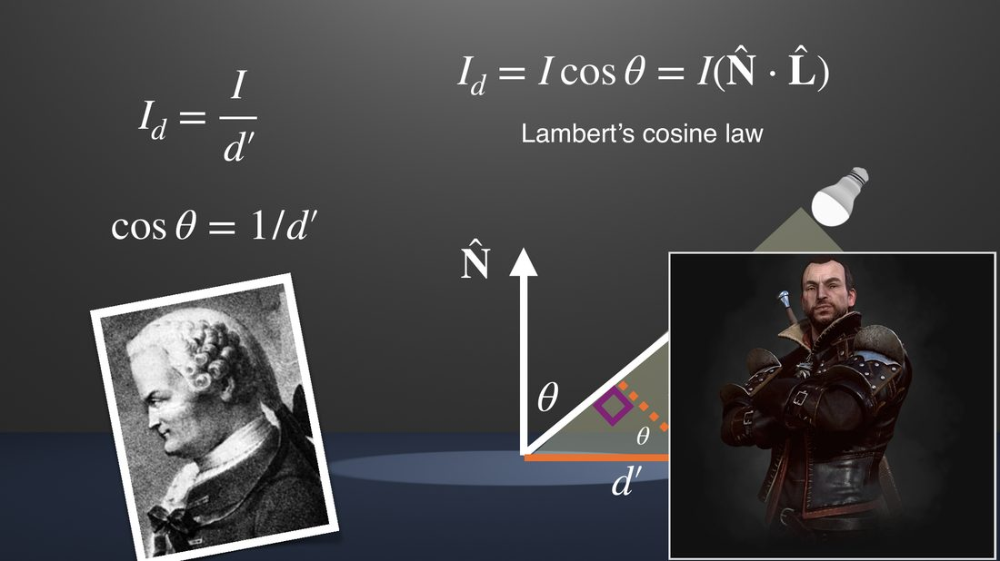
The relationship holds whether you move the light or tilt the surface — the normal moves with the plane. Tilt the surface so the normal faces away and \(\cos\theta\) goes negative. We can't have negative light, so we clamp it: \(\max(0,\ \hat{\mathbf N}\cdot\hat{\mathbf L})\). (Solve negative light and you'll win a Nobel Prize in quantum physics.)
Drag the light around the surface, or tilt the surface itself. Watch how N̂·L̂ — and the brightness of the lit patch — track the angle. Note how it clamps to black once the normal faces away.
Now put the teapot back and give it a colour, written \(k_d\) (the diffuse reflection coefficient). Move the light around and the teapot's shading follows Lambert's law exactly. To get the correct colour at a point, multiply the material colour by the light model:
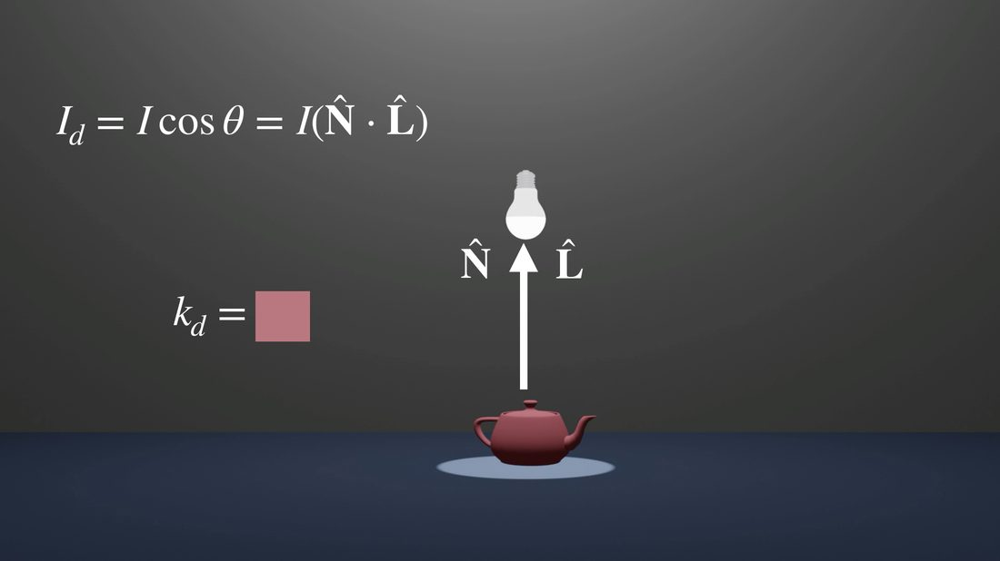
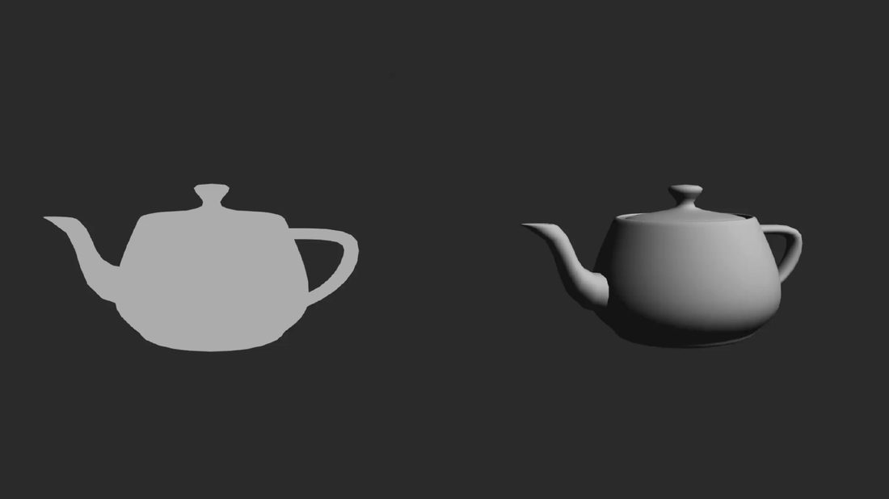
\(k_d\) doesn't have to be a flat colour. Since we can sample textures and map them to models, we simply look up \(k_d\) at the surface point after texture mapping and multiply it by the light model. Everything we built earlier in the pipeline plugs straight in.
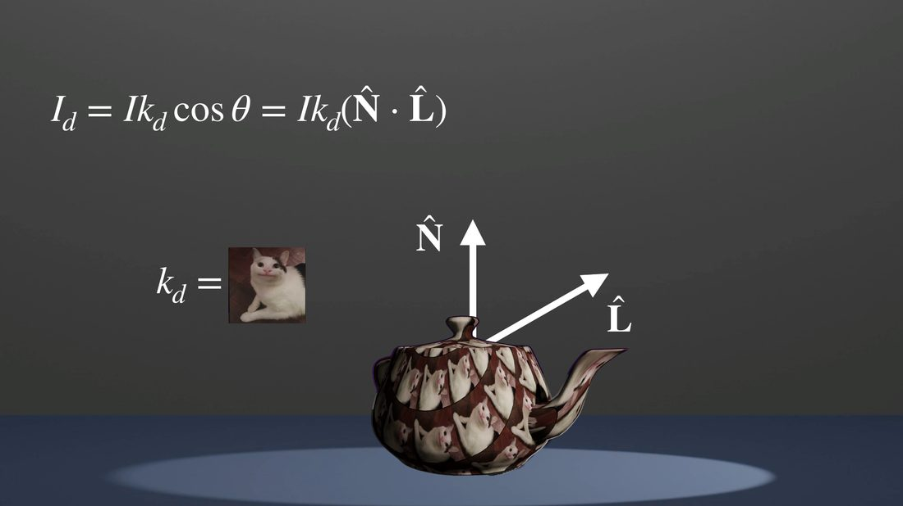
We've gone from an awful flat render to something that reads as a real shape — we can see the shadowing and understand the form. But a real ceramic teapot is shiny, and this one looks completely matte. We need to add highlights.
Watch the shiny teapot: as the light moves, the white highlights move too. But unlike diffuse shading, the highlight also depends on where you are looking from — think of the glare off a metal surface that hits your eye at just the right angle. (It's exactly why lecture theatres avoid reflective surfaces — projector light would bounce into someone's face.)
So specular reflection depends on both the light position and the viewing position. We bring in the camera. Simplify back to a 2D plane with specular properties. We now have four players:
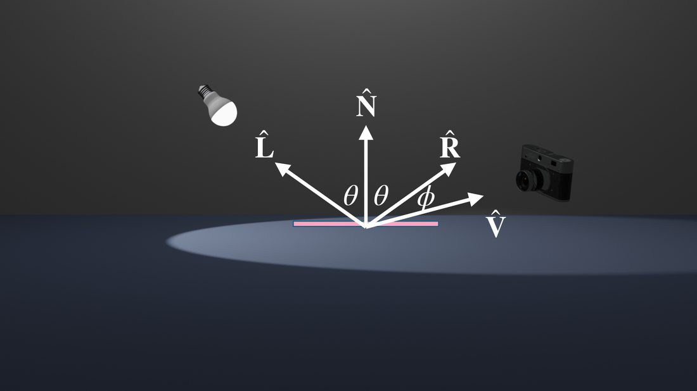
We only care about the specular component, so we use the perfect reflection ray \(\hat{\mathbf R}\). The highlight is defined by the angle \(\phi\) between \(\hat{\mathbf R}\) and the viewing direction \(\hat{\mathbf V}\). As before, the cosine of that angle is a dot product:
Add that raw term and it's wrong — almost the entire teapot becomes a highlight. Why? When \(\hat{\mathbf V}\) aligns with \(\hat{\mathbf R}\), the dot product is 1, as expected. But move slightly off-axis and we want a sharp drop-off — yet the cosine is still large (say 0.8), meaning 80% of the surface still reads as highlight. Not what a shiny material does.
The trick is to raise the dot product to a power \(n\). Since \(\cos\phi\) lies between −1 and 1, raising it to a power shrinks the highlight: off-axis values collapse toward zero much faster, leaving a small bright spot.
Here \(k_s\) is the specular colour — usually white, though some metals tint it. This whole expression is the specular reflection term. The exponent \(n\) (the shininess) controls highlight size: bigger \(n\) → tighter, smaller, more circular highlight. As \(n\to\infty\) you approach a perfect mirror — a single ray reflecting from a vanishingly small point.
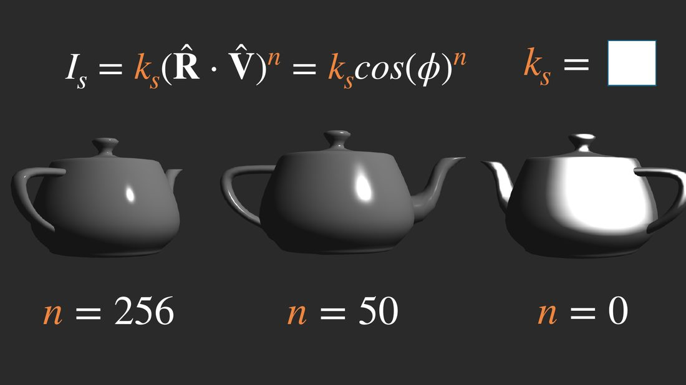
Drag the viewer position and slide the shininess n. See how the highlight tightens as n grows, and how it peaks only when V̂ lines up with the reflection R̂.
We used \(\hat{\mathbf R}\), the perfect reflection of \(\hat{\mathbf L}\) about the normal — but we still have to compute it. Here's the derivation, using only vector projection from the very first maths lecture.
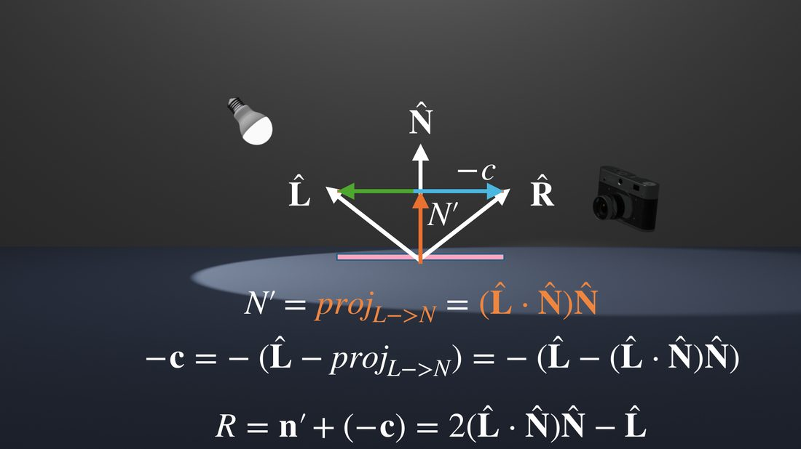
Define \(\mathbf N'\) as the projection of \(\hat{\mathbf L}\) onto the normal \(\hat{\mathbf N}\). The line joining \(\hat{\mathbf L}\) and \(\hat{\mathbf R}\) crosses the normal at a right angle, so:
Let \(\mathbf c\) be the sideways component: \(\mathbf c = \hat{\mathbf L} - \mathbf N'\). On the other side of the normal that component is \(-\mathbf c\). The reflection is the projection plus this flipped component:
1. Project \(\hat{\mathbf L}\) onto \(\hat{\mathbf N}\) → \(\mathbf N'\). 2. The leftover sideways part is \(\mathbf c = \hat{\mathbf L}-\mathbf N'\). 3. Flip it to \(-\mathbf c\) on the far side. 4. Add: \(\hat{\mathbf R} = \mathbf N' - \mathbf c = 2(\hat{\mathbf L}\cdot\hat{\mathbf N})\hat{\mathbf N} - \hat{\mathbf L}\).
Drag the light vector L̂. The projection N′ onto the normal, the sideways component c, and the resulting reflection R̂ all update live — the visual proof of R̂ = 2(L̂·N̂)N̂ − L̂.
We have an intensity \(I\), a diffuse term and a specular term. Because we are working with an additive model of light, we simply add them. The shared intensity \(I\) factors out:
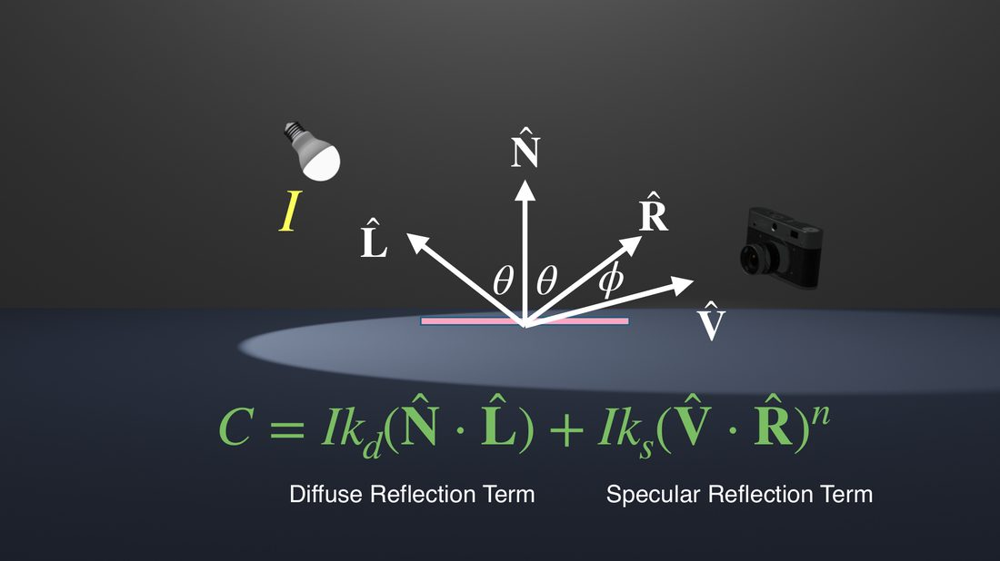
This is one of the most popular simple light models in graphics — the Phong light model (also called a reflection model or material model; the terms are interchangeable). It transforms our matte teapot into a believable shiny ceramic surface.
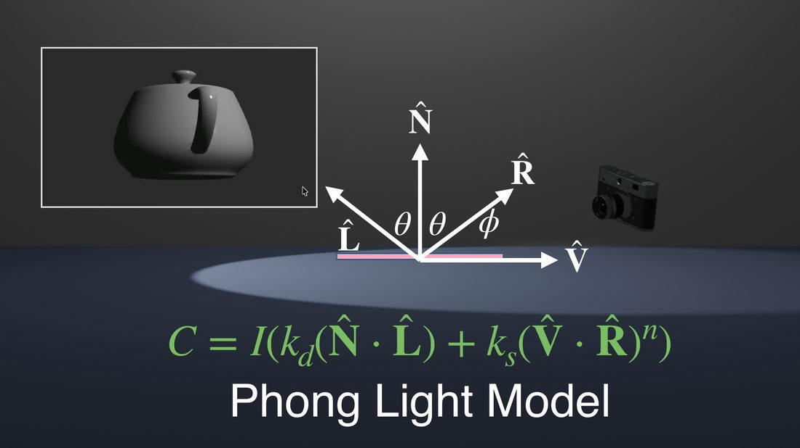
Phong is a local illumination model: it lights each surface from the light source alone. It knows nothing about how objects in the scene affect one another (a nearby mirror, say, is ignored). Local models run fast on the GPU but have real limits.
Phong has a flaw at extreme viewing angles — grazing angles in graphics-speak. When the view direction becomes nearly perpendicular to the normal (looking at the teapot almost from underneath), the specular term breaks down and the highlight falls apart.
The deeper fix is to change the question. Phong asks: "is the viewer looking down the reflection ray?" Instead we should ask: "is the surface oriented so the viewer sees a reflection?" We answer it with the halfway vector \(\hat{\mathbf H}\), sitting exactly between \(\hat{\mathbf L}\) and \(\hat{\mathbf V}\), and measure the angle \(\omega\) between \(\hat{\mathbf H}\) and the normal \(\hat{\mathbf N}\).
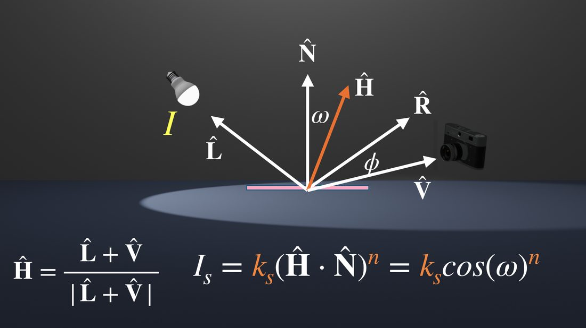
The intuition: when \(\hat{\mathbf V}\) is aligned with the reflection, \(\hat{\mathbf H}\) aligns with \(\hat{\mathbf N}\) → full highlight. And \(\hat{\mathbf H}\) is dead cheap to compute — just add the two vectors and normalise:
One vector add plus a normalise — much faster on the GPU than building \(\hat{\mathbf R}\) with dot products and additions. This is the Blinn–Phong light model. It stays stable at grazing angles, and side-by-side it handles reflections slightly better — notice the teapot's handle and the area around the cap.
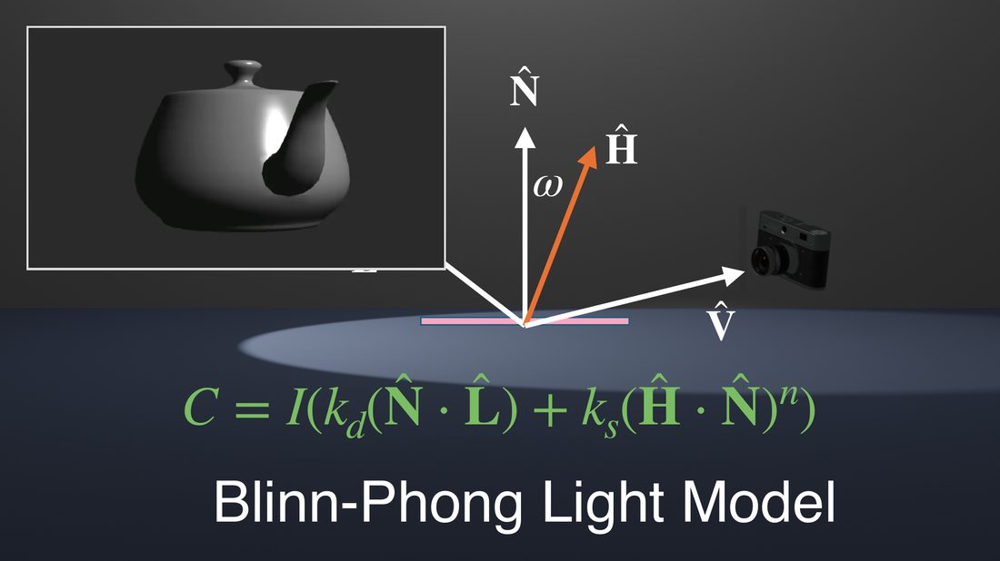
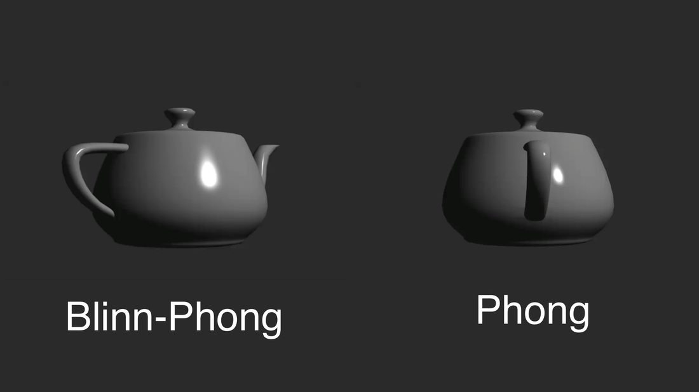
Drag the viewer toward a grazing angle (low, near the surface). Toggle between the reflection vector R̂ (Phong) and the halfway vector Ĥ (Blinn–Phong) and watch how the highlight behaves as the view skims the surface.
Both Phong and Blinn–Phong are local illumination models — they light an object from the source but ignore inter-object effects. They run first and fast on the GPU. These models are the foundation that newer techniques like ray tracing and other light-transport methods build on.
We assumed one light. With more lights, the additive model lets us simply sum their contributions — as long as we don't push past white in low dynamic range, or the colour data structure breaks down.
And remember ambient light from the start? Local illumination ignores object-to-object bounce, but ambient light fills that role: a uniform term that lifts every point out of pure black. We add it at the end. It has its own intensity \(I_a\) and its own colour \(k_a\) — that colour lets ambient be tinted (a purple room casts a purple wash over everything).
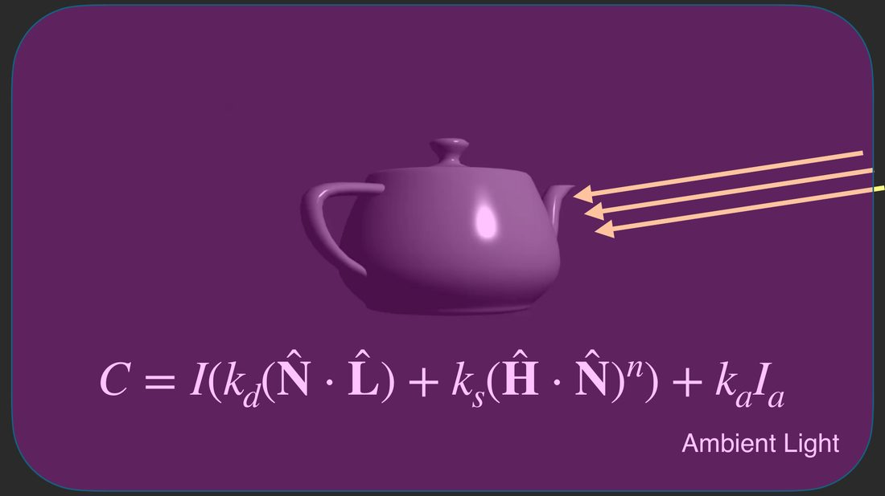
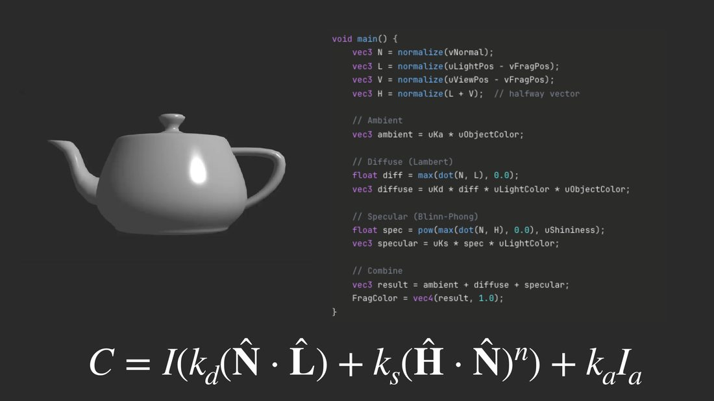
Add that ambient term and the teapot finally reads as proper ceramic. Everything from the chapter maps directly onto a short fragment shader: the code mirrors the equation line for line.
We assumed point lights. Real sources have shape — area lights, spotlights, distant (directional) lights — and each interacts with surfaces differently. Conceptually the model is unchanged; the maths just shifts slightly to account for the geometry.
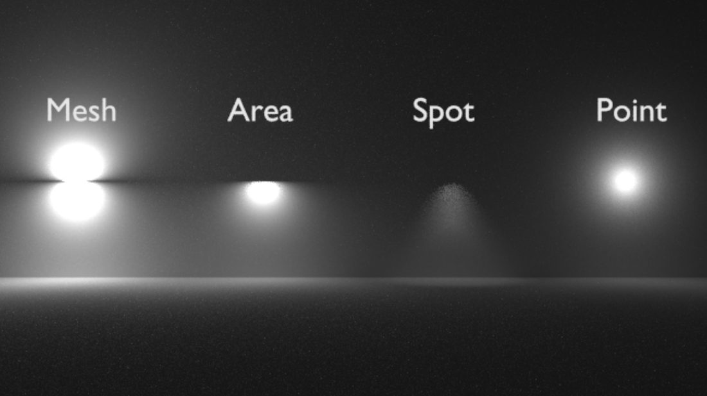
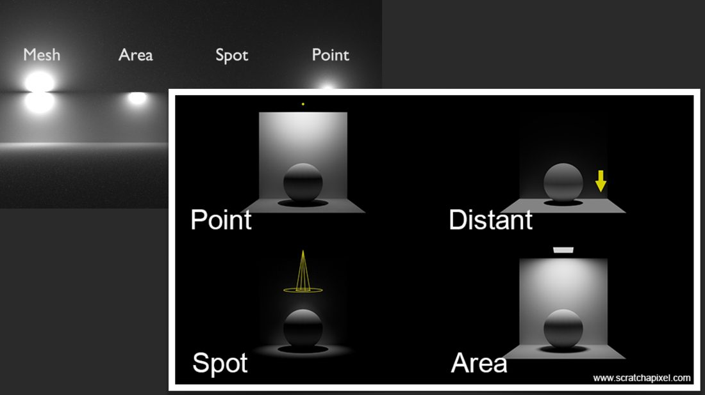
The other gap: what happens as the light moves away from the object? Everything darkens, because intensity falls with distance. To complete the equation we scale by some function of distance \(d_{att}\). This is distance attenuation — explored further in the workshops. Nothing difficult, but good to know it's there.
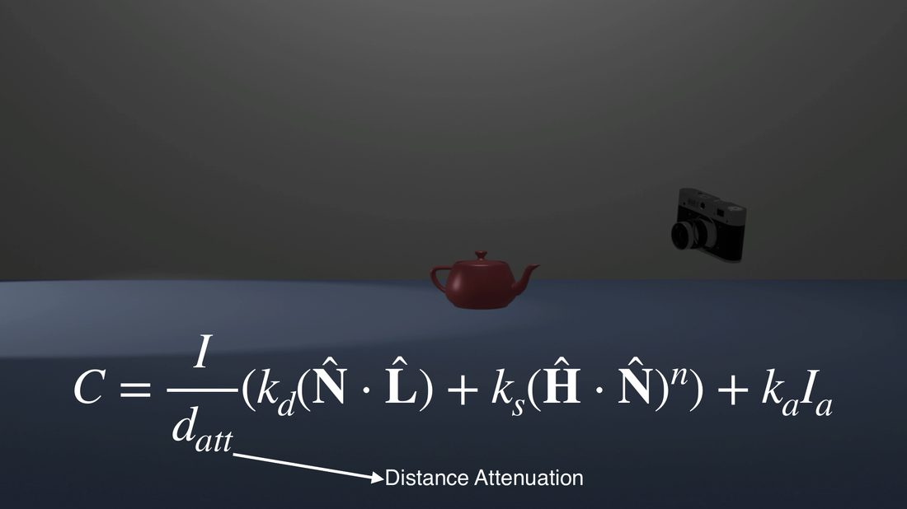
If there's one place in this course where the pieces of the puzzle come together, it's this. These shading models are the basis of techniques you've heard of — ray tracing and other light-transport methods — and are essential groundwork for any advanced rendering.
Six quiz questions drawn from the course quiz bank, then real past-paper questions mapped to this chapter. Click an answer to check it; expand the past-paper questions for model-answer pointers.
COMP27112 exam questions where this chapter is directly examinable. Try them closed-book first.
Figure 4 shows a side view of a surface illuminated by a light source at position P. Explain what the normalised vectors \(\hat{\mathbf N}\), \(\hat{\mathbf R}\) and \(\hat{\mathbf V}\) represent. Explain how \(\hat{\mathbf R}\) and \(\hat{\mathbf V}\) are used to estimate specular reflection, and what other factors (with their ranges) must be included.
A lightproof box contains a partially shiny surface S, lit by a monochromatic source of intensity I at distance D. (a)(i) Derive an expression for the light diffusely reflected from S (4). (a)(ii) Derive the light specularly reflected from S (6). (b) How would you modify these if I were a coloured source C? (2) (c) For a triangular mesh M of the same material, how do you render it smooth and correctly shiny? (4) (d) How would you make M appear bumpy via an image-based technique? (4)
Q9. What is the fundamental difference between local and global illumination? (1)
Q10. What is the purpose of \(k_s(\hat{\mathbf R}\cdot\hat{\mathbf V})^n\) in a simple local illumination model? Explain each term and its range. (4)
With reference to the lighting expression in Figure 2, explain the function of the part inside the square brackets, defining each term and its range of values.
Q22. Describe the shortcomings of the simple shading algorithm and how Gouraud shading addresses them.
Q23. Describe the shortcomings of Gouraud shading and how Phong shading addresses them.
"From an awful flat-looking model to something that finally makes sense — this is where the pipeline comes together."
Ambient + Diffuse (Lambert) + Specular (Phong / Blinn–Phong), summed over lights, attenuated by distance. The whole equation, on one line: